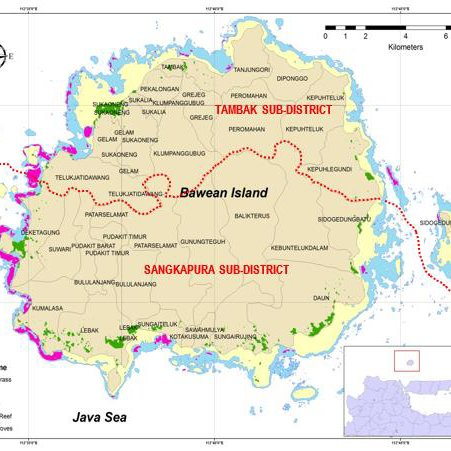
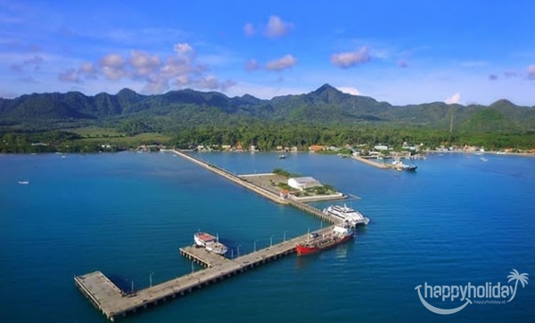
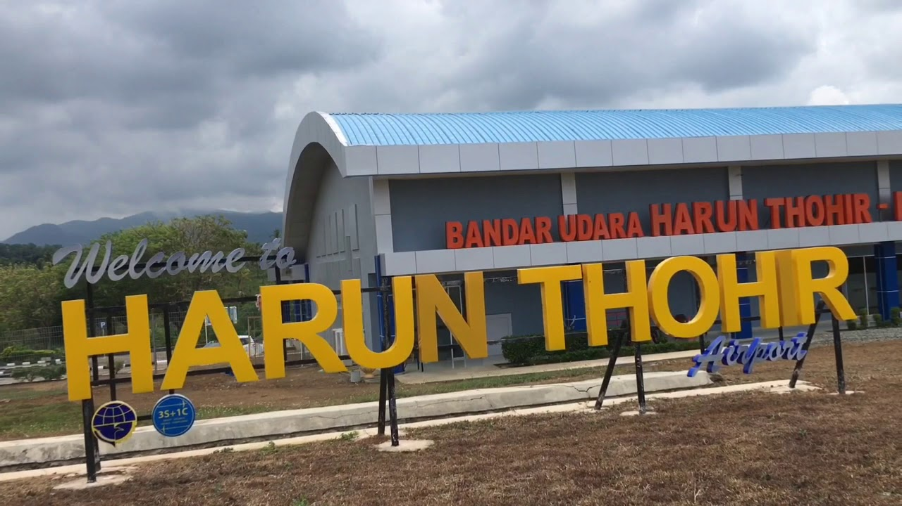
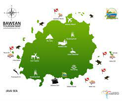
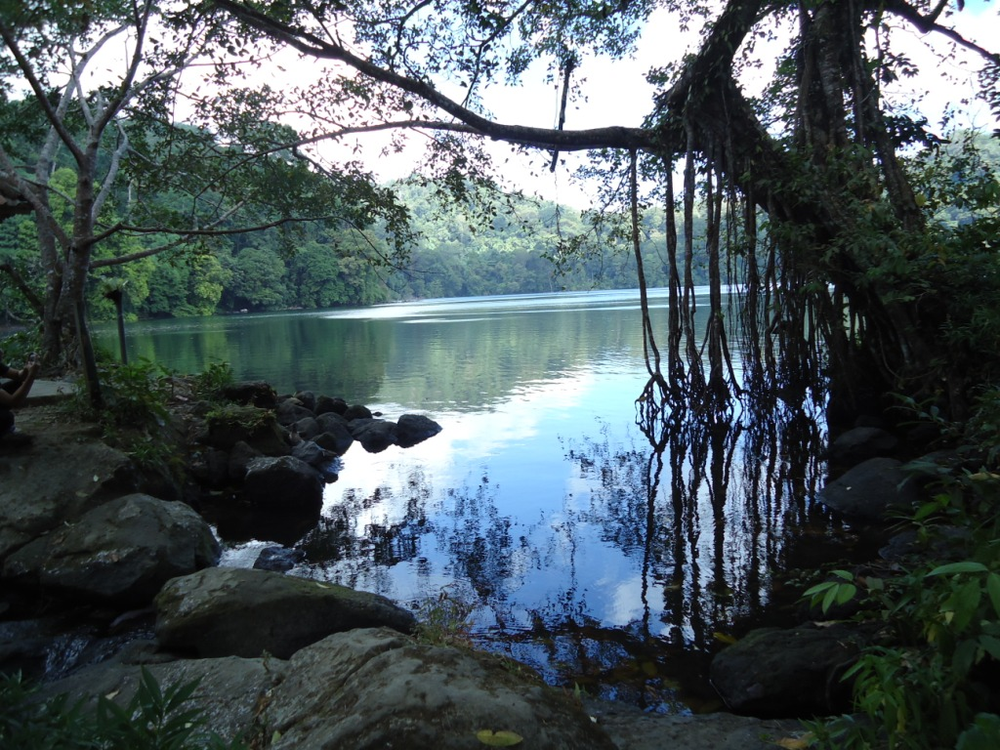
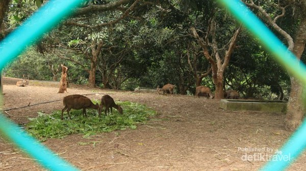

Geografi

Pulau Bawean adalah sebuah pulau Indonesi yang berlokasi sekitar 150 km (93mil) selatan dari
surabaya, di Laut Jawa. Pulau ini dibawah pengelolaan Kabupaten Gresik, Provinsi Jawa Timur. Pulau
ini memiliki diameter sekitar 15km dan dikelilingi oleh jalan kecil. Bawean didominasi oleh gunung
berapi yang sudah punah pada bagian tengahnya yang menjulang hingga 655 mdpl.
Populasi dari pulau ini pada saat sensus penduduk tahun 2010 tercatat berjumlah 70000. Tetapi lebih
dari 26000 dari total penduduk (70% dari populasi laki-laki) tinggal diluar, bekerja di bagian lain
Indonesia, Singapura dan Malaysia. Sehingga, 77% penduduk yang menempati pulau ini adalah perempuan,
yang karenanya sering disebut sebagai "Pulau Wanita".
Wilayah pulau ini terbagi menjadi 2 daerah administrasi, Sangkapura dan Tambak. Lebih dari setengah
populasinya tinggal di daerah Sangkapura, yang terletak di bagian selatan dari pulau.
Transportasi
Pulau Bawean terletak di Laut Jawa, sekitar 150 km utara dari Pulau Madura. Pulau ini memiliki
bentuk seperti lingkaran dengan diameter diantara 11 dan 18 km atau sekitar 15 km. Untuk dapat
menjangkau pulau ini, kita dapat menggunakan transportasi laut dan udara.

Transportasi laut dapat digunakan karena adanya pelabuhan yang terletak di sebelah utara pulau,
daerah Sangkapura. Kapal yang berada di pelabuhan ini, sering beroperasi ke pulau Jawa, yaitu
Pelabuhan Gresik dan Paciran. Kapal penumpang dapat memakan waktu 3 jam perjalanan, atau sekitar
40km/jam.

Transportasi udara menggunakan bandara udara Harun Thohir yang terletak di sebelah selatan pulau,
derah Tambak. Pesawat di bandara ini beroperasi di Sumenep dan Surabaya. Untuk menempuh satu
penerbangannya membutuhkan waktu kurang dari satu jam saja.
Wisata

Pantai dari Pulau Bawean berbentuk lekukan dan terdapat banyak teluk kecil, terdapat pula banyak
pulau pasir kecil, bebatuan dan terumbu karang dilepas pantai dengan ukuran lebih dari 600m. Selain
wisata pantai dan laut, terdapat pula danau , bukit dan air terjun yang dapat kita kunjungi.
Dengan jumlah penduduk yang terbilang tidak ramai, kebersihan dan keasrian lingkungan di Pulau
Bawean sangat terjaga. Tak jarang kita dapat menjumpai flora dan fauna yang menarik di pulau ini.
Berikut ini adalah beberapa destinasi wisata yang ada di Pulau Bawean.
Danau Kastoba

Untuk menikmati keindahan dan pesona danau ini dapat dicapai dengan berjalan kaki. Terletak
di
Desa Paromaan Kecamatan Tambak di puncak ketinggian dan berada di tengah-tengah Pulau Putri
Bawean. Dengan prasarana jalan setapak, merangkak naik melewati rimbunan pohon-pohon raksasa
berumur ratusan tahun.
Merupakan kenyamanan tersendiri bagi para pecinta alam, selain itu di tempat ini terdapt
spesies
satwa langka, aneka serangga yang takkan mungkin sama jenisnya dengan serangga di pelosok
negeri, sehingga lokasi ini mempunyai daya tarik luar biasa dan sulit dibandingkan dengan
obyek
wisata lainnya.
Pulau Gili Noko

Pulau Gili terletak di tengah laut dan hanya merupakan daratan berpasir putih yang
membentang +/-
sepanjang
600m2 dengan lebar 25 m. Pulau tak berpenghuni ini dikelilingi aneka bunga karang dengan
pesona
taman laut yang elok. Biasanya setelah mengunjungi pulau ini, pelancong akan melanjutkan ke
Pulau Gili Timur
Sementara Pulau Noko memiliki luas sekitar +/- 50.000 m2 dan berpenduduk sekitar +/- 800
jiwa. Daya tariknya , meskipun pulau ini dikelilingi laut tetapi terdapat sumber air
tawar
jernih dengan kandungan mineral tinggi yang konon dapat menjadikan awet muda bila
mengkonsumsi
setiap hari. Untuk menuju ke Pulau Gili ini bisa menyebrang dengan perahu motor sambil
melihat
pesona bunga karang aneka ragam.
Penangkaran Rusa

Bawean memiliki fauna asli pulau ini, yaitu rusa Bawean. Rusa Bawean pernah dijadikan
sebagai maskot Asean Games tahun 2018 ketika Indonesia berperan sebagai tuan rumah pesta
olahraga tersebut. Hal ini merupakan suatu kebanggan tersendiri bagi warga Bawean. Rusa
Bawean
memiliki ciri bintik putih di badannya, dan ukurannya yang tidak terlalu besar. Destinasi
penangkaran rusa ini terletak di daerah yang tidak ramai penduduk dan lingkungan yang masih
alami, yaitu perbukitan. Ketika berkunjung ke tempat ini, kita dapat berinteraksi dengan
memberi makan rusa jika beruntung.